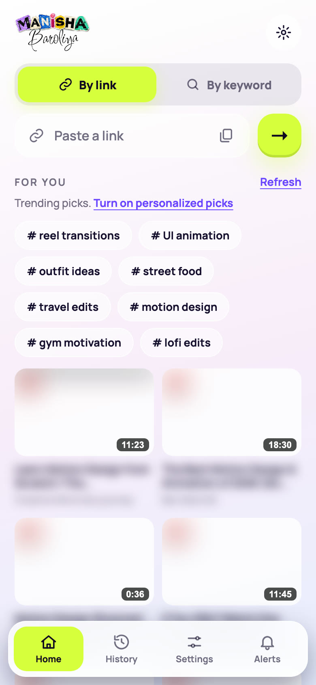
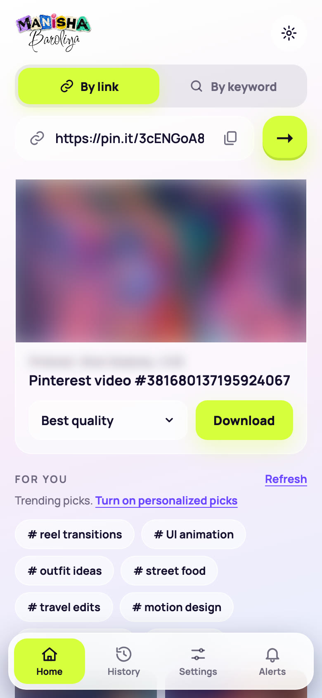
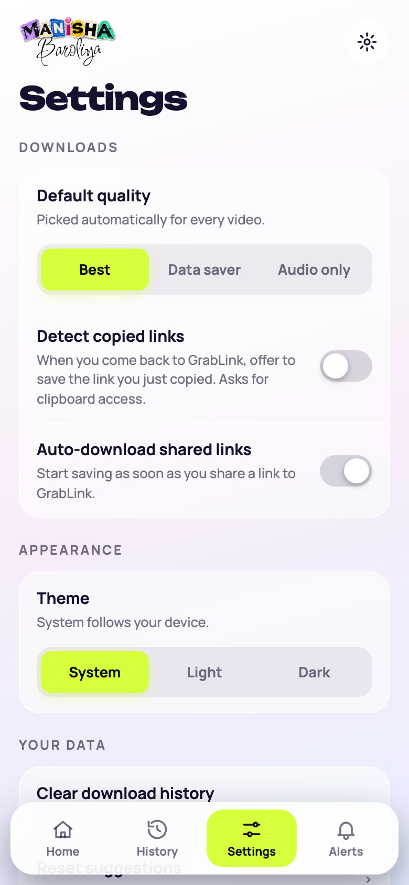
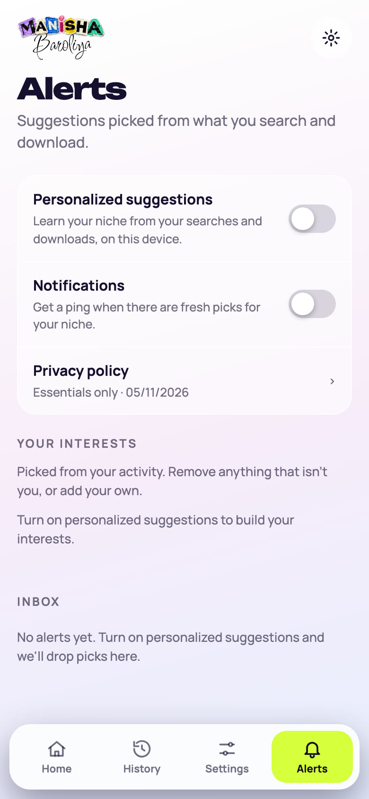

Saving a video from a link shouldn’t cost you ads, an account or a subscription.
GrabLink is a free video downloader for a link you already have. This is the thinking behind it: who it’s for, what hurts today, the choices I made and the parts that broke when I tested them for real.
No ads
No paid plan
No account
Role
Product designer — research, UX, UI and front-end
Team
Solo project
Surfaces
Website, installable app (PWA), Chrome extension
Status
Live, v1.1 — still learning
How to read this. Claims I could check by building and testing the product are marked Verified. Beliefs I haven’t yet tested with real users are marked Hypothesis. Those are my first research questions, not conclusions.
The short version
Problem: the simplest job on the internet — “I have the link, give me the file” — is usually wrapped in ads, upsells and detours.
Idea: one box, one tap. Take the file inside the app you’re already in and keep the business model out of the screen, because there isn’t one.
Hard lesson: big platforms block hosted downloaders. “Free and honest” only holds if the product tells you the truth and does the heavy lifting on your own device.
01
My point of view
If you already hold the link to a video you’re allowed to keep, getting the file should take one paste and one tap. Everything else on the screen is somebody else’s business model.
— The belief behind GrabLink
Why this is a design problem, not just a tooling one
Downloaders already exist, so the gap isn’t capability. It’s the experience around the capability: how many decisions you’re forced to make, how much you have to distrust the page, and how far you travel from the app where you found the video. I treated those as the product, and the extraction engine as a commodity.
02
The pain points
These are the frictions I set out to remove. Honest status on each, because a case study that only has confirmed facts usually hasn’t asked enough questions.
The page is built to sell, not to save
Hypothesis
Ad-funded downloaders tend to surround the real button with look-alike buttons, pop-ups and redirects. You spend your attention working out which control is real.
The good version is behind a paywall
Hypothesis
Higher quality, longer videos or “no limit” are common upsells. A task that costs the provider almost nothing becomes a subscription decision.
Too many steps for one job
Hypothesis
Copy the link, leave the app, open a tool, paste, wait, choose, dismiss something, save. The link is already in your hand; the route to the file shouldn’t be longer than the video.
The link has to leave the app it lives in
Verified
Phone share menus rarely list a downloader. The web’s Share Target works only in Chrome on Android, Windows and ChromeOS — not on macOS or iOS — so “just share it” isn’t universal.
Failures don’t explain themselves
Hypothesis
“Download failed” gives you nothing to act on. Was it private? Blocked? Not a video? People retry the same thing, or give up.
Trust is expensive
Hypothesis
Sign-ups, notification prompts on first visit and unclear data use make a one-off task feel like a commitment.
03
Who it’s for
Three starting profiles, written as jobs to be done. They’re proto-personas — assumptions to validate in the first round of interviews.
The reference collector
A designer or creator saving motion references from Pinterest, Dribbble or X.
When I find motion worth studying, I want it on my machine in seconds, so I can annotate it and build a moodboard.
The content manager
Someone repurposing clips their brand owns or has permission to use.
When I need an approved clip, I want the original file, so I don’t re-record or screen-capture it at lower quality.
The offline learner
A student saving a tutorial for a patchy connection.
When I’m about to lose signal, I want the video saved, so I can finish the lesson on the move.
What they have in common
None of them wants a relationship with a downloader. They want to be in and out. That’s the design brief in one line.
04
Design principles
Free means free
No ads, no paid tier, no account. If an idea needs one of those to work, the idea changes.
One job per screen
The first screen asks for a link. Nothing competes with that.
Meet the link where it lives
Share menu first, clipboard second, typing last.
Ask before assuming
Clipboard, notifications and personalisation each need a clear yes.
Say what happened
Errors name the cause in plain words and tell you what to try next.
Respect the content
For content you own or have permission to save. Private stays private.
05
The landscape
Rather than review individual products, I mapped the patterns by category to find where a different promise could sit.
Approach
Ads
Paywall
Friction
Typical weak spot
Ad-funded web tools
Heavy
Often for HD or bulk
Pop-ups, redirects
Distrust; fake buttons
Paid desktop apps
None
Licence or subscription
Download, install, update
Heavy for a one-off task
Browser extensions
Varies
Varies
Install and permissions
Tied to one browser
GrabLink
None
None
Paste or share; install optional
Platforms can block it — and it says so
General category patterns from my own reading of the space, not a review of named products. To be backed by a proper comparison in the next round.
The opening
Nobody owns “no ads, no paywall, no account, and it tells you the truth when it can’t help”. That became the positioning.
06
Key design decisions
Each decision has a cost. I’ve kept the trade-off next to the reason.
1 · One finder, two modes
Decision
A single box with a “By link / By keyword” toggle, instead of two inputs.
Because
One obvious place to start. The toggle remembers your last choice.
Trade-off
Keyword search returns real results for YouTube only; other platforms don’t allow outside search, so those link out. The UI says that instead of faking results.
2 · The website does one thing; the app does the rest
Decision
The site is a link box and a platform list. History, search, settings and alerts live only in the installed app.
Because
A first visit should ask for exactly one thing. Features earn their place once someone chooses to install.
Trade-off
Two layouts from one codebase, plus three app sizes (mobile, tablet, a compact laptop window). I kept it manageable with shared components and visibility classes.
3 · Take the file inside the app
Decision
Downloads stream through GrabLink with a progress bar and save to the device. No bouncing to another site.
Because
The detour is where ads and fake buttons live. Removing the detour removes the reason to show them.
Trade-off
It costs bandwidth, so the proxy only talks to an allow-list of known media hosts. It is deliberately not an open proxy.
4 · Be in the Share menu, with a clipboard fallback
Decision
Register as a share target and, where that isn’t supported, offer to read a copied link when you open the app.
Because
It removes the copy-and-switch steps for people who can use it.
Trade-off
Share Target isn’t available on macOS or iOS. The clipboard fallback asks permission first, because reading the clipboard is sensitive.
5 · Consent before personalisation
Decision
Suggestions and notifications stay off until you opt in. Data lives on the device, with no account.
Because
A one-off tool shouldn’t ask for trust it hasn’t earned.
Trade-off
Weaker suggestions than a service that watches everything. I accept that.
6 · A quiet interface with one loud action
Decision
Light, calm surfaces; lime is reserved for the primary action. The traffic-light scene on the website is the brand device (stop, ready, go), and its sign doubles as the “Download app” button.
Because
When nothing competes, the one coloured thing is the next step.
Trade-off
The scene only appears on wide screens and never inside the app, so the app stays fast and focused.
07
The reality check: what broke when I tested it
A promise of “free and honest” is only worth something if it survives contact with the real platforms. I tested the live product with real links on 4 November 2026.
Platform
What happened
Status
YouTube
Asks the hosted server to “confirm you’re not a bot”, so it can’t read the video.
Blocked
Instagram
Needs a logged-in session.
Blocked
Vimeo
Now requires a login for the web client.
Blocked
TikTok
The video is found and qualities are listed, but TikTok’s file host refuses the final download from our server.
Partial
Pinterest
Short pin.it links failed with “no directly downloadable file”. Pinterest only lists streaming playlists, but each quality also exists as one complete file. Offering that file fixed it; a 5-second test pin downloaded and played.
Fixed
X
Worked in my test only when the post actually contained a video.
Partial
What this changed in my thinking
Hosted extraction can’t be promised everywhere. Big platforms treat server traffic differently from a person’s own browser. No amount of interface design fixes that.
The business-model constraint is an architecture constraint. With no ads or fees there’s no budget for expensive infrastructure, so the sustainable design pushes the work to the user’s own device.
Honest errors became a feature. When a platform blocks the request, the message says it’s private, needs a login, or that the site is blocking the server, rather than a generic failure.
Decision. Treat the website as the front door and the install page, and move the real work onto the person’s device through the installed app, the local mode and the Chrome extension. The extension already saves Instagram videos using the person’s own login, and is the pattern I’d extend to other platforms.
08
What shipped
Paste or share a linkOne box. Or share to GrabLink; or open the app and accept the offer to use the link you just copied.
Pick a qualityBest quality first, other sizes below, audio-only when available.
Watch it saveA progress bar, then the file goes to your device. No second page, no pop-up.
Find it againHistory stays on the device, filterable by platform.
The finished screens

HomeOne box to start

ResultQuality, then Download

SettingsOptional, off by default

AlertsConsent before anything
Screens from the running product. Third-party video thumbnails are blurred.
What’s in the box
Link finder with a keyword mode and a platform filter (a 3-per-row grid).
In-app downloading with progress, plus a share sheet when a link arrives from another app.
History, settings and optional alerts, all behind a clear consent step.
Three layouts: phone, tablet and a compact laptop window for the installed app.
A Chrome extension that adds a GrabLink tile to Instagram’s Share dialog.
Microcopy that tells the truth
Instead of: “Download failed.”
It says: “This video is private, needs a login, or the site is blocking this server, so it cannot be downloaded.”
The reader learns it isn’t their fault and what the likely causes are. It’s still not a solution, which is why the on-device route matters.
09
Trust, privacy and access
Verified No account. History and settings are stored on the device only.
Verified Sheets use the native dialog element, so focus handling comes from the browser; icon buttons carry text labels; there’s a visible focus ring.
Verified Clipboard reading, notifications and personalisation each ask first and can be turned off.
Verified The proxy only fetches from an allow-list of media hosts.
Known gap The pages load fonts from Google Fonts, a third-party request. Self-hosting them would remove it.
Known gap I haven’t yet run a screen-reader pass or a contrast audit across every state. That’s next on the list.
Responsibility
GrabLink says plainly that it’s for content you own or have permission to save, and that private videos can’t be downloaded. It doesn’t try to get around protected or private content. A free tool is easy to misuse; the design should not pretend otherwise.
10
How I’ll know it works
I haven’t run this product through user testing yet, so I’m not claiming results. These are the measures and the method I’ll use. Targets are set after a first baseline.
Time to first fileMedian seconds from landing to a saved file, in moderated sessions.
Link → file successShare of attempts that end in a saved file, per platform.
Retries per taskHow often people repeat the same step. A proxy for unclear errors.
Install and returnPeople who install from the site and open the app again within a week.
Method: five moderated task tests on phone and laptop, plus short follow-up interviews. I’d avoid third-party analytics so the privacy promise stays intact, using opt-in counters if numbers are needed later.
11
Version 2.0 — from “download” to “it’s in your gallery”
The finish line isn’t a file in a Downloads folder. It’s the video, sitting in your gallery, one tap after you pressed Share.
— The vision for the next version
The problem version 1 still leaves
Even when everything works, version 1 asks you to open GrabLink, wait, then find the file and move it to Photos. On a phone, that last stretch is where people lose the thread. And on the platforms that block hosted tools, it often doesn’t work at all.
The experience I want
Tap Share in any appInstagram, Pinterest, X, TikTok, YouTube, a browser. GrabLink sits in the same share row as everything else.
A small sheet, not a whole appIt slides up over where you are: a thumbnail, the best quality already chosen, one button, Save to gallery. A setting can make even that automatic.
See it landA progress ring, then a calm confirmation: “Saved to Photos · Open · Undo”. Nothing else to dismiss.
Stay where you wereYou return to the feed you were scrolling. GrabLink never hijacks the screen.
Where the real value is
One tap to the gallery
A GrabLink album is created for you. No Downloads folder, no file manager, no moving things around.
Video, photos and covers
Save the video, a photo post or carousel, or just the cover image, from the same share tap.
Already saved? It tells you
If that link is already in your gallery, it says so instead of making a duplicate copy.
Works on a weak connection
No signal? The save is queued and finishes when you’re back online, with a quiet notification.
Does the work on your phone
Reading the video from your own device and login is what lets it work where hosted tools get blocked (see the reality check).
Still free, still no account
No ads, no subscription, no sign-up. The principles from version 1 don’t change.
Is it feasible? An honest look
Platform
How it could work
Catch
Android
A real share target that saves straight into the gallery’s Movies and Pictures folders.
Needs a native app for the cleanest result. The web app can already receive shares, but saving to the gallery is limited.
iPhone
A native share extension that saves to Photos with add-only permission.
Extensions have tight memory and time limits, the web app can’t receive shares at all, and Apple’s developer programme costs money.
Desktop
The Chrome extension saves to a chosen folder in one click.
There’s no “gallery” on desktop, so the promise becomes “saved to your folder”.
This is a plan to test, not a promise. I’ve not built or validated any of version 2.0 yet.
What could stop it
App-store policy. Stores can reject or remove downloaders, and platforms’ terms may object. I’d design around content you own or have permission to save, and check each store’s rules before building.
Permission fatigue. Photos access, notifications and clipboard are three asks. Version 2.0 would request each only at the moment it’s needed.
Cost versus the “free” promise. Store fees and maintenance are my costs. The test is whether I can carry them without adding ads or a paid tier.
How I’d validate it before building
Low-fidelity wireframes of the share sheet and confirmation states (see the portfolio).
A “wizard of Oz” test: five people use a clickable prototype while I do the saving by hand, to see if one tap is really enough.
Measure: taps from Share to saved (target: two or fewer), time from Share to saved, and how often people open the full app afterwards.
12
Reflection and what’s next
What I’d do differently
Test the riskiest assumption first: can the platforms be read at all from a hosted server? I designed the experience before I knew the answer.
Write the honest error states before the happy path, since for some platforms they’re the main path.
Next
Extend the extension to YouTube, X, Pinterest and TikTok, reading the page you’re already on.
Run the five-person task test and replace every Hypothesis tag with evidence.
Self-host fonts and complete an accessibility audit.